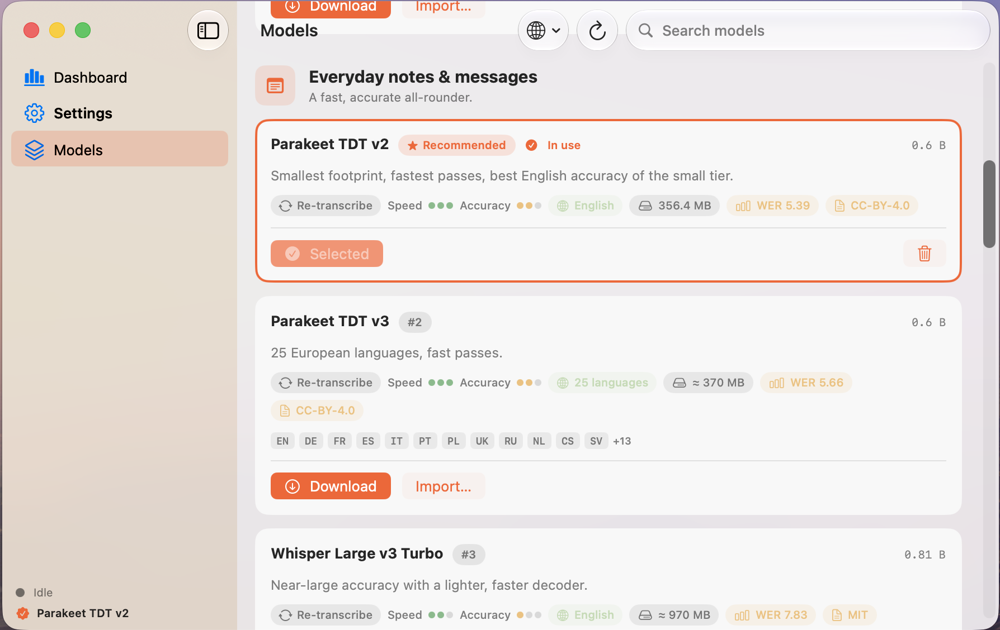
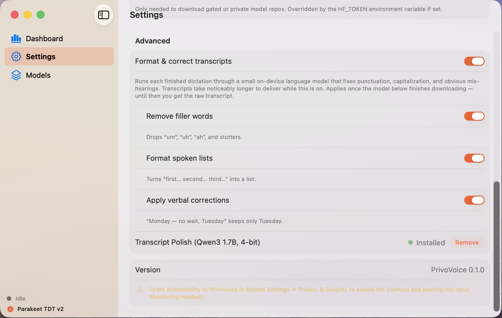
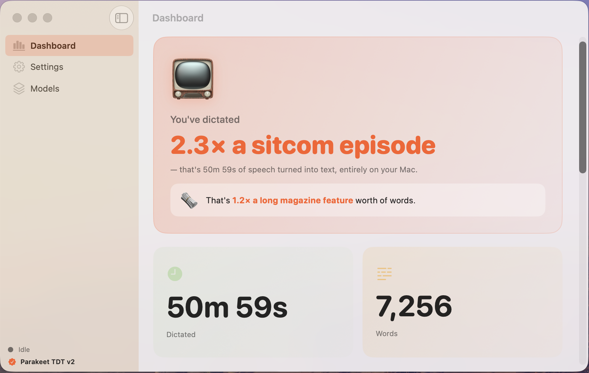

100% on-device dictation
You talk.
We write.
…and your privacy is guaranteed.
Hold a key, speak, release — PrivoVoice types it into any app, right at your cursor. Every word is transcribed on your Mac, never in the cloud.
Free · macOS 27+ · Apple Silicon
or brew install --cask austinjiangh/tap/privovoice
Dictation that keeps up with you
Push-to-talk anywhere on your Mac — email, docs, chat, code. No per-app setup, no switching windows.
Live transcription HUD
Watch your words appear in a floating heads-up display while you speak — release the key and the text drops in at your cursor.
Your choice of model
Pick from 0.6B to 2.5B speech models — smallest-and-fastest to best-punctuation. Each card shows speed, accuracy, and size; download in one click.
Speaks your language
Multilingual models cover 25+ languages — English, German, French, Spanish, Italian, Portuguese, Polish, Ukrainian, and more.

Auto-polish
Speak like a human.
Read like an editor.
An optional on-device language model tidies each dictation the moment you finish — no cloud, about a fifth of a second.
We need three things:
- 1. The slides
- 2. The demo
- 3. The pricing sheet

Polish is yours to tune
- Remove filler words — drops “um”, “uh”, “ah”, and stutters.
- Apply verbal corrections — “Monday — no wait, Tuesday” keeps only Tuesday.
- Format spoken lists — “first… second… third…” becomes a real numbered list.
- Fully local — a compact on-device LLM (~1 GB, opt-in download) does the editing. About 0.1–0.35 s per dictation once warm.
Privacy
Your voice never leaves your Mac.
Capture, transcription, and polish all happen on your Apple Silicon chip. Nothing is ever sent to a remote server — there is no server.
No cloud, ever
Models run locally. Audio and text stay on-device — even the polish LLM.
No account
No sign-up, no login, no telemetry, no analytics. Download and dictate.
Two permissions only
Microphone to hear you, Accessibility to type for you. No Input Monitoring, ever.
Works offline
Once a model is downloaded, dictation works with Wi-Fi off. Try it.
Dashboard
Your dictation, measured
Minutes spoken, words typed, streaks and trends — a clear view of how much you dictate over time, and how it changes week to week.
51m
dictated this week
7,256
words — all typed by voice
All stats are computed and stored locally, like everything else.

Pricing
Completely free.
Not “free trial”. Not “free tier”. Just free.
$0
forever
- Every model, every language
- Auto-polish included
- No subscription, no account
- No usage limits
Free · macOS 27+ · Apple Silicon
or install with Homebrew:
brew install --cask austinjiangh/tap/privovoice
Downloaded the DMG instead? macOS asks once about unidentified developers — right-click → Open, or run
xattr -d com.apple.quarantine /Applications/PrivoVoice.app